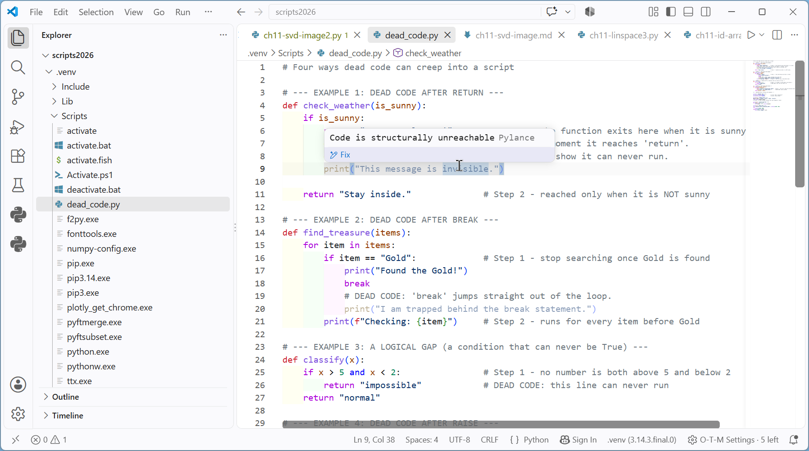

Chapter 4: Flow Control - Beyond the Text Solutions¶
Chapter 4 of the book ends with "Beyond the Text" problems. These take you a little past what the chapter covers, so that you explore ideas you will meet again and again in real Python work. This page gives the solutions to two of them:
- Unreachable (dead) code: lines of a script that can never run, how they get there, and how to find and remove them.
- The iterator protocol: what a
forloop really does behind the scenes, shown by writing a loop without using the wordfor.
Both topics are about flow control, the subject of Chapter 4. The first shows what happens when statements like return, break and raise send the flow away before some lines get a chance to run. The second shows how Python's for loop moves from one item to the next. Understanding both will help you write cleaner loops and spot bugs faster.
Each solution explains the idea step by step. The scripts have # Step comments, and every script is followed by its output.
Table of Contents¶
- Chapter 4: Flow Control - Beyond the Text Solutions
- Key Terms Used on This Page
- 1. Unreachable (Dead) Code
- 2. The Iterator Protocol: The "No-For-Loop" Challenge
Key Terms Used on This Page¶
| Term | Meaning in simple words | Learn more |
|---|---|---|
| Dead code / unreachable code | Lines that can never run, however the program is used. | Wikipedia: Unreachable code |
| Exception | An error raised while the program is running, such as ValueError or StopIteration. |
Errors and Exceptions |
raise |
A statement that creates an exception on purpose. | The raise statement |
try / except / finally |
Blocks that let a program catch an exception (except) and run cleanup code no matter what (finally). |
Handling Exceptions |
| Static analysis / linter | A tool that reads your code without running it and points out likely problems. | Pylint |
| Iterable | Anything a for loop can go through: a list, string, tuple, dictionary, range() and so on. |
Glossary: iterable |
| Iterator | An object that hands out the items of an iterable one at a time and remembers where it is. | Glossary: iterator |
iter() |
Built-in function that makes an iterator from an iterable. | iter() |
next() |
Built-in function that gets the next item from an iterator. | next() |
StopIteration |
The exception next() raises when an iterator has no items left. |
StopIteration |
1. Unreachable (Dead) Code¶
Dead code (also called unreachable code) is any part of a script that can never run. Python does not treat it as an error. The program runs normally and simply never reaches those lines.
That sounds harmless, but it causes real trouble:
- It misleads readers. Someone reading the code assumes every line does something. They may waste time trying to understand, test or fix lines that never run.
- It hides bugs. Often the dead line was meant to run, such as a log message or a cleanup step. The program then quietly skips something important.
- It clutters the code and makes it harder to maintain.
Dead code usually appears when a statement sends the flow somewhere else before the following lines get their turn. The statements that do this are return, break, continue and raise. It can also appear when a condition can never be true.
Types of Unreachable Code¶
The following table compares the common types of unreachable code.
| Type | Mechanism | Common Cause | How to Fix |
|---|---|---|---|
| Post-Return | The return statement exits a function immediately. |
Placing cleanup code or logging after the return. |
Move the code before the return, or use a finally block if the code is inside a try statement. |
| Post-Break | The break statement exits a loop immediately. |
Writing code at the bottom of a loop body, after the break, in the same block. |
Make sure the break is the final statement in its conditional branch. |
| Post-Continue | The continue statement jumps straight back to the top of the loop. |
Writing code after continue in the same block. |
Move the code before the continue. |
| Logical Gap | An if or elif condition that can never be met (for example if False:). |
Hard-coded flags or conflicting logic (for example if x > 5 and x < 2:). |
Review the Boolean logic, or remove the block if the feature is no longer needed. |
| Post-Raise | An exception is raised, stopping the current flow at once. | Writing code after a raise statement in the same block. Even if the error is later caught by a try/except elsewhere, the lines after raise are still skipped. |
Move the code before the raise, or put it in the except block that handles the error. |
Steps to check a block for dead code
- Find every
return,break,continueandraisein the block. - Look at the lines that come after it and are indented at the same level. Those lines can never run.
- Look at each
ifandelifcondition. Ask: "Is there any value that makes this True?" If not, the block under it is dead. - Either move the dead lines to a place where they will run, or delete them.
Example Script: How Dead Code Creeps In¶
The following script shows four ways dead code can enter a script. Each dead line is marked with a # DEAD CODE comment.
# Four ways dead code can creep into a script
# --- EXAMPLE 1: DEAD CODE AFTER RETURN ---
def check_weather(is_sunny):
if is_sunny:
return "Wear sunglasses!" # Step 1 - the function exits here when it is sunny
# DEAD CODE: Python leaves the function the moment it reaches 'return'.
# VS Code usually greys out the next line to show it can never run.
print("This message is invisible.")
return "Stay inside." # Step 2 - reached only when it is NOT sunny
# --- EXAMPLE 2: DEAD CODE AFTER BREAK ---
def find_treasure(items):
for item in items:
if item == "Gold": # Step 1 - stop searching once Gold is found
print("Found the Gold!")
break
# DEAD CODE: 'break' jumps straight out of the loop.
print("I am trapped behind the break statement.")
print(f"Checking: {item}") # Step 2 - runs for every item before Gold
# --- EXAMPLE 3: A LOGICAL GAP (a condition that can never be True) ---
def classify(x):
if x > 5 and x < 2: # Step 1 - no number is both above 5 and below 2
return "impossible" # DEAD CODE: this line can never run
return "normal"
# --- EXAMPLE 4: DEAD CODE AFTER RAISE ---
def withdraw(balance, amount):
if amount > balance:
raise ValueError("Insufficient funds") # Step 1 - the error stops the function here
print("Sorry, not enough money.") # DEAD CODE: never printed
return balance - amount
# --- FUNCTION CALLS (running the examples) ---
print("--- Weather Test ---")
print(check_weather(True)) # prints "Wear sunglasses!"
print(check_weather(False)) # prints "Stay inside."
print("\n--- Treasure Test ---")
bag_of_items = ["Stone", "Stick", "Gold", "Silver"]
find_treasure(bag_of_items)
# "Silver" is never checked, because the loop stopped at "Gold".
print("\n--- Logical Gap Test ---")
for value in [1, 3, 7]:
print(value, "->", classify(value))
print("\n--- Raise Test ---")
print("Balance after withdrawing 300:", withdraw(1000, 300))
try:
withdraw(1000, 5000)
except ValueError as err:
print("Error caught:", err)
Output
--- Weather Test ---
Wear sunglasses!
Stay inside.
--- Treasure Test ---
Checking: Stone
Checking: Stick
Found the Gold!
--- Logical Gap Test ---
1 -> normal
3 -> normal
7 -> normal
--- Raise Test ---
Balance after withdrawing 300: 700
Error caught: Insufficient funds
What the output tells us
- Weather Test: "This message is invisible." never appears, because
returnended the function first. - Treasure Test: "I am trapped behind the break statement." never appears. Notice also that "Checking: Gold" and "Checking: Silver" are missing. When "Gold" is found,
breakends the loop before theprint(f"Checking: {item}")line is reached, and "Silver" is never looked at. - Logical Gap Test: "impossible" is never returned, whatever number we try. No number can be greater than 5 and less than 2 at the same time.
- Raise Test: "Sorry, not enough money." never appears.
raisestopped the function, and the error was caught outside it, by thetry/exceptin the main program.
The flowchart below shows the path through find_treasure(). Notice that no arrow ever leads into box 6, the dead line.
flowchart TD
T1["1. Take the next item from the list"] --> T2{"2. Is the item Gold?"}
T2 -- "No" --> T3["3. Print Checking: item"]
T3 --> T1
T2 -- "Yes" --> T4["4. Print Found the Gold!"]
T4 --> T5["5. break: leave the loop"]
T6["6. Dead line after break: never reached"]
T5 --> T7["7. Function ends"]
Tools That Spot Dead Code¶
You do not have to find dead code by eye alone.
- Code editors. VS Code, with the Python extension installed, greys out (dims) lines it knows can never run. If you hover the mouse over such a line, it shows the message "Code is unreachable". PyCharm does something similar.

- Linters. A linter is a tool that reads your code without running it and reports likely problems. Pylint reports dead lines as warning
W0101: unreachable.
Here is what Pylint says about the example script above, saved as dead_code.py. (Install it once with pip install pylint, then run pylint dead_code.py in a terminal. Only the relevant lines are shown.)
dead_code.py:9:8: W0101: Unreachable code (unreachable)
dead_code.py:20:12: W0101: Unreachable code (unreachable)
dead_code.py:33:8: W0101: Unreachable code (unreachable)
The three numbers after each file name are the line number, the column and the warning code. Pylint found the dead lines after return (line 9), break (line 20) and raise (line 33).
It did not report the logical gap in Example 3 (line 26). Tools can easily see that nothing runs after a return, because that depends only on the position of the lines. But whether x > 5 and x < 2 can ever be true depends on the meaning of the condition, and most tools do not check that. Logical gaps are usually found by careful reading, code review and testing with several different values.
| Type of dead code | Greyed out in VS Code? | Reported by Pylint? |
|---|---|---|
After return, break, continue or raise |
Yes | Yes (W0101) |
Under if False: |
Yes | No (Pylint gives a different warning, W0125, about using a constant as a condition) |
Logical gap such as if x > 5 and x < 2: |
No | No |
Using finally for Cleanup Code¶
The table above suggests using a finally block for code that must run even when a function returns early. Code in a finally block runs when the try block is left, for any reason: after a normal finish, after a return, or after an error. So cleanup placed there can never become dead code.
Steps
- Put the main work inside a
tryblock. - Put the cleanup (closing a file, printing a log line and so on) inside
finally. - When
returnruns in thetryblock, Python first runs thefinallyblock, and only then leaves the function.
# Cleanup that must run even though the function returns early
def read_setting(name):
print(f"Opening settings to look for '{name}'")
try:
if name == "theme":
return "dark" # Step 1 - the function wants to leave here
return "unknown"
finally:
# Step 2 - a finally block runs before the function really exits
print("Closing settings")
print("Result:", read_setting("theme"))
Output
Opening settings to look for 'theme'
Closing settings
Result: dark
"Closing settings" is printed before "Result: dark". This shows that the finally block ran after return "dark" but before the function actually handed back its value.
Follow-up question: Is the line after return the only thing that can become dead in Example 1?
Answer: In check_weather(), the last line return "Stay inside." is not dead: it runs whenever is_sunny is False, as the second call in the script shows. A line is dead only if no input can ever reach it. Always check with more than one input before deciding a line is dead.
2. The Iterator Protocol: The "No-For-Loop" Challenge¶
This is the solution to the Beyond Text problem given in Chapter 4 Flow Control.
In Python, we often use for loops to go through lists or strings. But have you ever wondered how the for loop actually "talks" to the list? It uses the Iterator Protocol.
The task is to study (1) Iterable (2) Iterators (3) Using the iter() function to create an iterator. (4) Understand how to use the next() function to grab the next item.
The Assignment¶
Assignment: The "No-For-Loop" Challenge
Objective
Your goal is to simulate how Python's for loop works "under the hood." You will process a collection of items manually by managing the data pointer yourself.
The Task
Write a Python script that iterates through a list of three colors: "Red", "Green", and "Blue". You must print each color individually, but there is a catch: You are not to use the for keyword.
Constraints & Rules
- No
forloops: You must use awhile True:loop to handle the repetition. - Manual Tracking: Use the
iter()function to initialize an iterator object from your list. - Manual Retrieval: Use the
next()function to retrieve each item from the iterator. - Error Handling: You must use a
try...exceptblock to catch the specific exception that Python raises when it runs out of items. - Clean Exit: When the end of the list is reached, print a "Loop Finished" message and use
breakto exit the loop gracefully.
Implementation Hints
- The Iterator: Think of the list as a book and the result of
iter()as a bookmark that remembers the current page. - The Trigger: When
next()is called on an empty iterator, it doesn't return None; it gives an error calledStopIteration. - The Safety Net: Your except block should specifically look for
StopIterationto know exactly when to stop the while loop.
The expected identical logic to be used is:
- Initialize the pointer (iter).
- Attempt the action (try + next).
- Handle the boundary condition (except StopIteration).
- Terminate the process (break).
Iterables and Iterators Explained¶
Before writing the solution, it helps to be clear about two words that sound alike but mean different things.
An iterable is any collection you can go through one item at a time: a list, a string, a tuple, a dictionary, a range(). Think of it as the book. It holds all the pages, but it does not know which page you are reading.
An iterator is a helper object that walks through an iterable. Think of it as the bookmark. It remembers where you are, and each time you ask, it moves on by one page and tells you what is on it.
| Point | Iterable (the book) | Iterator (the bookmark) |
|---|---|---|
| Examples | ["Red", "Green", "Blue"], "hello", range(5) |
The object returned by iter(colors) |
| Holds the data | Yes | No, it points into the iterable |
| Remembers a position | No | Yes |
| How you get one | Create it: colors = [...] |
Ask for one: iter(colors) |
Works with next()? |
No (raises TypeError) |
Yes |
| Can be used again from the start? | Yes, as often as you like | No, once it reaches the end it stays finished |
Two built-in functions connect them:
iter(iterable)creates a new iterator (bookmark) for the iterable, placed before the first item.next(iterator)returns the item at the bookmark and moves the bookmark on by one. When there are no items left, it does not returnNone. Instead it raises an exception calledStopIteration.
This agreement between iterables, iterators, iter() and next() is called the iterator protocol. (A protocol here just means an agreed set of rules that objects follow so that other code can work with them.) Every for loop in Python relies on it.
Solution Script¶
The solution follows the four-step logic of the assignment exactly:
- Initialize the pointer:
color_cursor = iter(colors). - Attempt the action: inside
try, callnext(color_cursor)and print the colour. - Handle the boundary condition:
except StopIterationcatches the signal that the list has run out. - Terminate the process: print "Loop Finished" and
breakout of thewhile Trueloop.
flowchart TD
S1["1. Initialize: color_cursor = iter(colors)"] --> S2["2. Start while True loop"]
S2 --> S3["3. Attempt: try next(color_cursor)"]
S3 --> S4{"4. Was an item returned?"}
S4 -- "Yes" --> S5["5. Print Processing color"]
S5 --> S3
S4 -- "No: StopIteration raised" --> S6["6. Handle: except StopIteration"]
S6 --> S7["7. Print Loop Finished"]
S7 --> S8["8. Terminate: break"]
S8 --> S9["9. Program continues normally"]
# --- BEYOND TEXT: MANUAL ITERATION ---
# Step 1 - The iterable (the data)
colors = ["Red", "Green", "Blue"] # a list of three colours
# Step 2 - Initialize: create the iterator (the pointer, or bookmark)
# iter() returns a 'list_iterator' object that remembers its position.
color_cursor = iter(colors) # the bookmark starts before the first item
print("Iterator type:", type(color_cursor).__name__)
print("Starting Manual Loop...")
print("-" * 20)
# Step 3 - Repeat with while True (in place of a for loop)
while True:
try:
# Step 4 - Attempt: next() returns the item at the bookmark
# and moves the bookmark on by one
current_color = next(color_cursor)
print(f"Processing color: {current_color}")
except StopIteration:
# Step 5 - Handle: next() raises StopIteration when no items are left
print("-" * 20)
print("Loop Finished")
# Step 6 - Terminate: leave the while loop
break
print("Program continues normally...")
Output
Iterator type: list_iterator
Starting Manual Loop...
--------------------
Processing color: Red
Processing color: Green
Processing color: Blue
--------------------
Loop Finished
Program continues normally...
Trace table
| Round | next(color_cursor) gives |
What happens |
|---|---|---|
| 1 | "Red" |
Prints "Processing color: Red" |
| 2 | "Green" |
Prints "Processing color: Green" |
| 3 | "Blue" |
Prints "Processing color: Blue" |
| 4 | Raises StopIteration |
The except block prints "Loop Finished" and break ends the loop |
Note that the loop has no condition of its own (while True). The only way out is the break inside the except block. Without that break, the loop would call next() again and again, catching StopIteration every time, and would never end.
Comparing with an Ordinary for Loop¶
Here is the same job done with a normal for loop:
# The same job done by an ordinary for loop
colors = ["Red", "Green", "Blue"]
for current_color in colors: # iter() and next() are called for us
print(f"Processing color: {current_color}")
print("Loop Finished")
Output
Processing color: Red
Processing color: Green
Processing color: Blue
Loop Finished
Behind the scenes, the for loop does exactly what our manual script does:
| Step | Manual version | What the for loop does for you |
|---|---|---|
| Initialize | color_cursor = iter(colors) |
Calls iter(colors) when the loop starts |
| Attempt | current_color = next(color_cursor) |
Calls next() before each round and stores the item in current_color |
| Handle | except StopIteration: |
Catches StopIteration quietly |
| Terminate | break |
Ends the loop and moves to the next line |
So the for loop is a short, safe way of writing the four-step pattern. You will almost always use for in real programs. The value of the manual version is that it shows how for works.
Exploring Further¶
This script tries out several things about iterables and iterators that are worth knowing.
# Exploring iterables and iterators
colors = ["Red", "Green", "Blue"]
# Step 1 - A list is an iterable, but it is NOT an iterator
try:
next(colors)
except TypeError as err:
print("next(colors) ->", "TypeError:", err)
# Step 2 - iter() turns the list into an iterator
cursor = iter(colors)
print("First next():", next(cursor))
print("Second next():", next(cursor))
# Step 3 - The list itself is unchanged; only the bookmark has moved
print("The list is still:", colors)
# Step 4 - A second iterator has its own, separate bookmark
other = iter(colors)
print("New iterator starts again at:", next(other))
# Step 5 - The first iterator carries on from where it stopped
print("Third next() on the first iterator:", next(cursor))
# Step 6 - An iterator that is used up stays used up
print("Items left in the first iterator:", list(cursor))
# Step 7 - next() can return a default value instead of raising StopIteration
print("next(cursor, 'No more') ->", next(cursor, "No more"))
# Step 8 - Strings, tuples, dictionaries and ranges are iterables too
word_cursor = iter("Hi!")
print("From a string:", next(word_cursor), next(word_cursor), next(word_cursor))
marks = {"Asha": 91, "Ravi": 78}
print("From a dictionary (keys):", list(iter(marks)))
Output
next(colors) -> TypeError: 'list' object is not an iterator
First next(): Red
Second next(): Green
The list is still: ['Red', 'Green', 'Blue']
New iterator starts again at: Red
Third next() on the first iterator: Blue
Items left in the first iterator: []
next(cursor, 'No more') -> No more
From a string: H i !
From a dictionary (keys): ['Asha', 'Ravi']
What this shows
- You cannot call
next()on a list directly. You must first make an iterator withiter(). - Taking items from an iterator does not change the list.
- Each call to
iter()makes a brand-new bookmark, starting at the beginning. - Once an iterator reaches the end, it stays empty. To go through the list again, make a new iterator.
next(iterator, default)returnsdefaultinstead of raisingStopIterationwhen the items run out.- Going through a dictionary gives its keys.
Follow-up Questions¶
1. Why does next() raise an exception at the end instead of simply returning None?
Answer: Because None could be a real item in the list. For example, in [3, None, 7], if next() returned None to mean "finished", the loop would stop early at the second item. An exception is a signal that cannot be confused with any item.
2. What would happen if you moved color_cursor = iter(colors) inside the while True: loop?
Answer: A new bookmark would be created at the start of every round, always pointing at the first item. The loop would print "Processing color: Red" for ever and never reach StopIteration. This is why the "Initialize" step must come before the loop.
3. Could the solution use a while loop with a counter instead, such as while i < len(colors):?
Answer: Yes, for a list. But that works only for collections that support positions (indexes) and len(). Many iterables, such as files being read line by line, or generators, have no length and no indexes. The iter()/next() pattern works for all of them, which is exactly why Python's for loop is built on it.
4. How could you write the challenge solution more briefly while still not using for?
Answer: Use the default value of next(), together with the walrus operator := (Python 3.8 and later), which assigns a value and tests it in one step:
colors = ["Red", "Green", "Blue"]
color_cursor = iter(colors)
while (current_color := next(color_cursor, None)) is not None:
print(f"Processing color: {current_color}")
print("Loop Finished")
This gives the same result for this list. But, as Question 1 explains, it would stop early if the list itself contained None. The try/except StopIteration version is the safer general pattern, and it is the one the assignment asks for.